Manual de Usuario
Formulario: Tipo de Movimiento de Inventario
Descripción
Este formulario permite gestionar los tipos de movimiento del inventario dentro del sistema MRP. Se pueden ingresar, modificar, eliminar y consultar registros.
Botones del formulario
- Ingresar: Permite agregar un nuevo tipo de movimiento.
- Modificar: Permite editar un registro existente.
- Guardar: Guarda los cambios realizados.
- Cancelar: Cancela la operación actual (Ingresar o Modificar).
- Eliminar: Elimina el registro seleccionado.
- Consultar: Permite buscar información.
- Imprimir: Muestra el reporte del sistema.
- Refrescar: Actualiza los datos mostrados.
- Salir: Cierra el formulario.
Funcionamiento
Para ingresar un nuevo registro, presione Ingresar, complete los campos y luego Guardar.
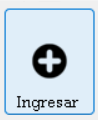
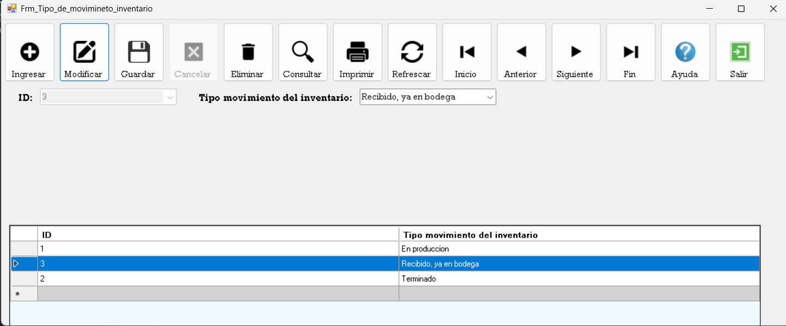
Para modificar un registro, seleccione uno, presione Modificar y luego Guardar.
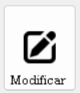
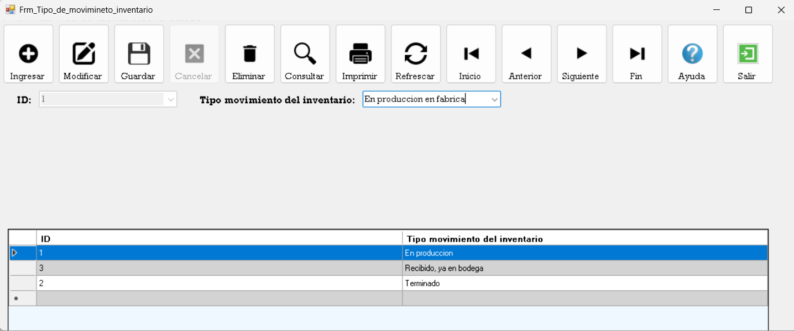
Si decide no continuar, presione Cancelar.
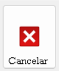
Para eliminar, seleccione un registro y presione Eliminar.
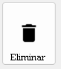
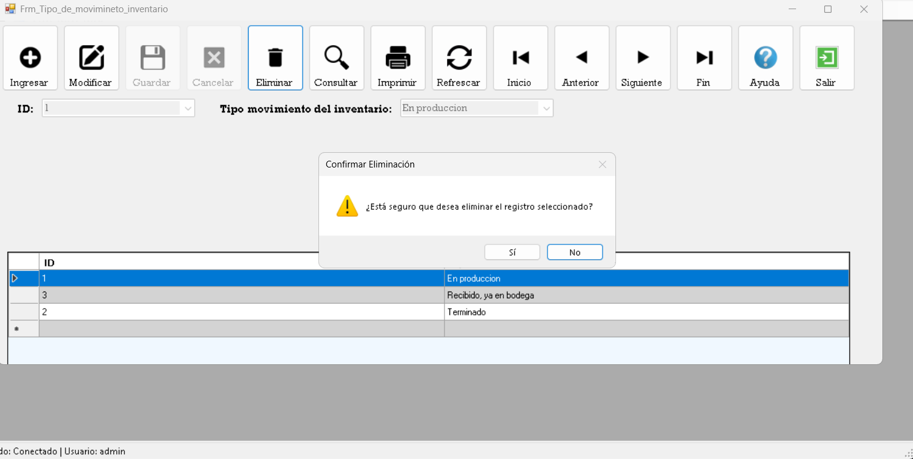
Para buscar información, presione Consultar.
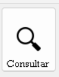
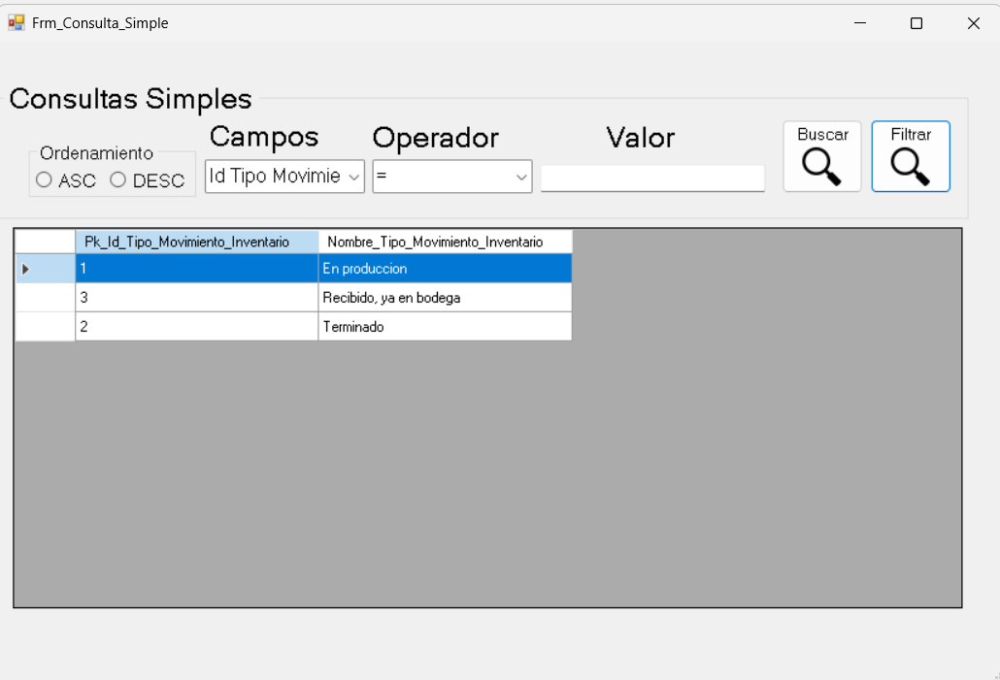
Para ver el reporte, presione Imprimir.
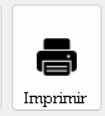
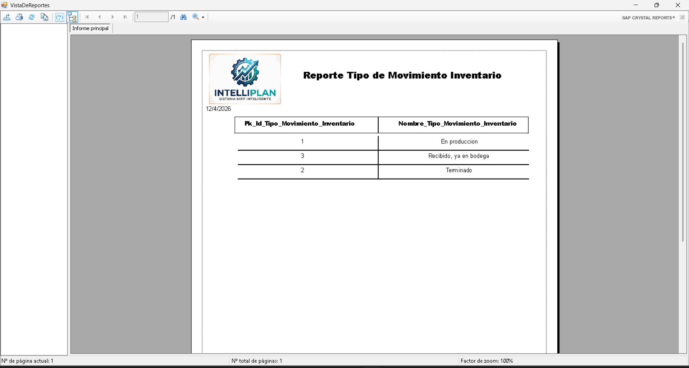
Para actualizar datos, presione Refrescar.
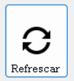
Para cerrar el formulario, presione Salir.
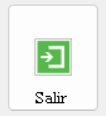